图片来源
图片来自 Wikimedia Commons，按各自许可证使用；作者与许可证照文件页写；图下的“摄于”是文件页记的拍摄年份或日期，没有的是文件页没记或还没查。外链图片版权不明，只放链接，不放在本站。
| 地点 | 图 | 作者 | 许可证 | 来源 |
|---|---|---|---|---|
| 阿尔贝蒂娜博物馆 |  摄于 2021-08-16 |
C.Stadler/Bwag | CC BY-SA 4.0 | 文件页 |
| Altaussee 湖环湖（可加 Gaisknechtstein 观景点） |  摄于 2022-10-16 |
Carsten Steger | CC BY-SA 4.0 | 文件页 |
| Altaussee 湖环湖（可加 Gaisknechtstein 观景点）（第 2 张） | 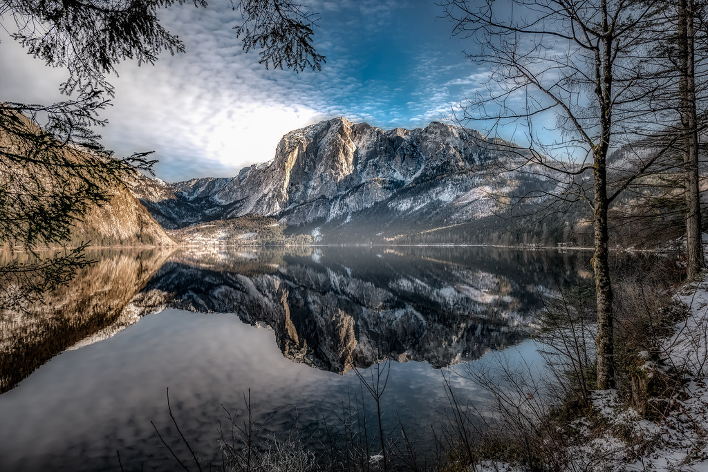 摄于 2018-12-27 |
Bernd Thaller | CC BY 2.0 | 文件页 |
| Altaussee 湖环湖（可加 Gaisknechtstein 观景点）（第 3 张） | 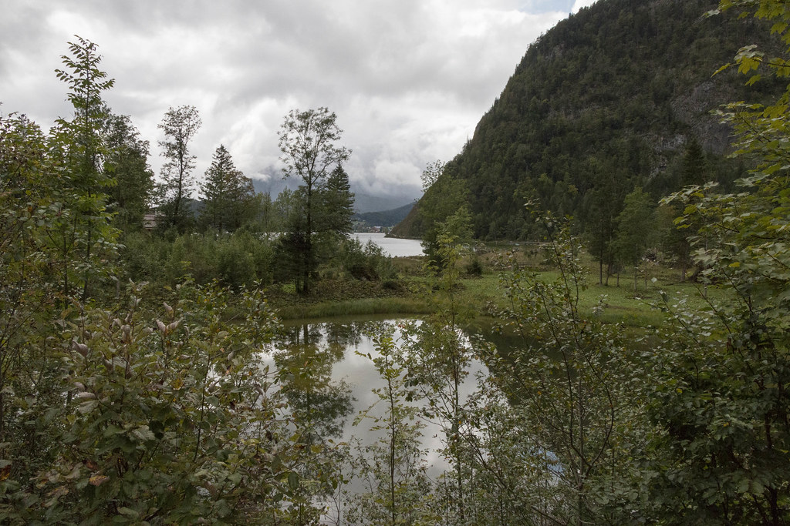 摄于 2018-09-04 |
Alexander Slabihoud | CC BY 2.0 | 文件页 |
| 从 Bad Ischl 走到 Altaussee（7 号路，经 Rettenbachalm、Blaa-Alm） |  摄于 2019-04-21 |
Hannes Flo from Austria | CC BY 2.0 | 文件页 |
| 安德拉什大街与英雄广场（坐 M1 老地铁） |  摄于 2024-08-22 |
FrogsLegs71 | CC BY-SA 3.0 | 文件页 |
| Weißenbach – Nixenfall（Attersee 南头，AllTrails 简单） |  摄于 2020-08-09 |
AtterseeMM | CC BY-SA 4.0 | 文件页 |
| 美景宫下宫 | 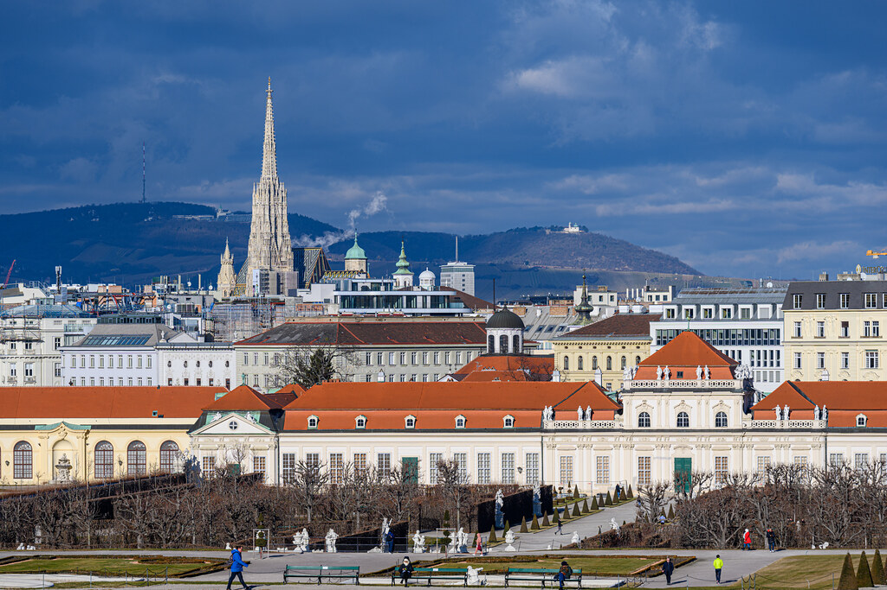 摄于 2022-01-06 |
Sandor_Somkuti | CC BY-SA 2.0 | 文件页 |
| 美景宫上宫（克里姆特《吻》） |  摄于 2018-04-21 |
C.Stadler/Bwag | CC BY-SA 4.0 | 文件页 |
| 美景宫上宫（克里姆特《吻》）（第 2 张） | 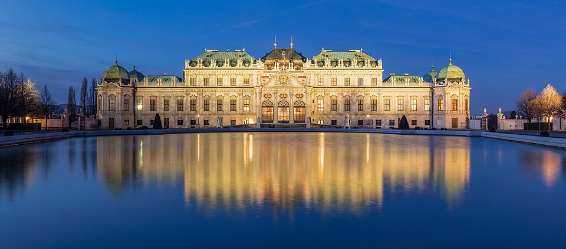 摄于 2020-02-01 |
Diego Delso | CC BY-SA 4.0 | 文件页 |
| 美景宫上宫（克里姆特《吻》）（第 3 张） | 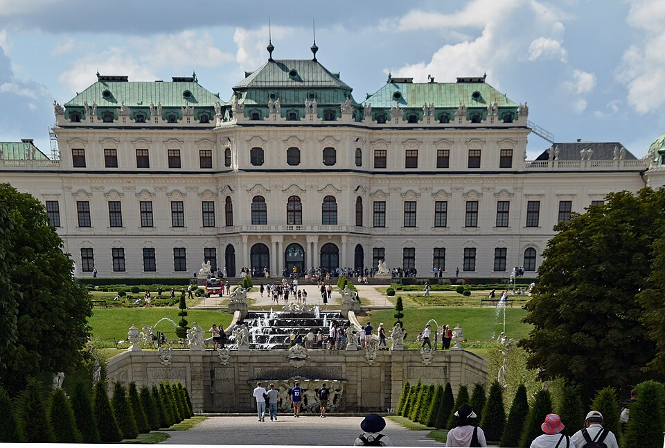 摄于 2026-07-22 |
Thomas Dahlstrøm Nielsen | CC BY 4.0 | 文件页 |
| Blockfabrik 抱石馆 |  摄于 2023-05-15 |
Andrzej Otrębski | CC BY-SA 4.0 | 文件页 |
| Bräugasthof（Hallstatt 湖边老店） |  摄于 2022-05-28 |
Werner100359 | CC BY-SA 4.0 | 文件页 |
| Brunnwind（St. Gilgen 湖边小馆） |  摄于 2019-07-14 |
Funke | CC BY-SA 4.0 | 文件页 |
| 布达城堡与城堡区（Várkert Bazár 免费电梯下山） |  摄于 2021-04-07 |
VargaA | CC BY-SA 4.0 | 文件页 |
| 布达城堡迷宫 |  摄于 2023-07-19 |
MOs810 | CC BY 4.0 | 文件页 |
| Café Gloriette（美泉宫凯旋门里的咖啡馆） |  摄于 2025-10-29 |
Iuno3 | CC BY-SA 4.0 | 文件页 |
| Café Sperl（《爱在黎明破晓前》同款咖啡馆） |  摄于 2023-05-22 |
© 1971markus | CC BY-SA 4.0 | 文件页 |
| Café-Konditorei Wallner（St. Wolfgang 老店） |  摄于 2019-01-30 |
Ray Swi-hymn from Sijhih-Taipei, Taiwan | CC BY-SA 2.0 | 文件页 |
| 中央市场 |  摄于 2021-10-09 |
Balon Greyjoy | CC0 | 文件页 |
| 陈家面馆 Chen's Ramen | 外链 | 未知 | 未知 | 文件页 |
| 多瑙岛 Copa Beach 河边散步 |  摄于 2026-08-12 |
CBJH | CC0 | 文件页 |
| Dachstein 巨冰洞（Rieseneishöhle，附猛犸洞） |  摄于 2021-09-18 |
Tigerente | CC BY-SA 4.0 | 文件页 |
| 多瑙河夜游（已订已付） |  摄于 2018-02-15 |
Florian Fèvre | CC BY-SA 4.0 | 文件页 |
| 链子桥与佩斯河边夜景散步 |  摄于 2024-11-22 |
Jorge Franganillo | CC BY 2.0 | 文件页 |
| Demel（国王煎饼） |  摄于 2025-01-31 |
Sandor Somkuti from Wien, Österreich | CC BY-SA 2.0 | 文件页 |
| 犹太会堂（烟草街会堂） |  摄于 2023-03-18 |
Daniel from Glasgow, United Kingdom | CC BY 2.0 | 文件页 |
| Dorf-Alm zu St. Wolfgang | 外链 | 未知 | 未知 | 文件页 |
| Hallstatt Echerntal 峡谷到 Waldbachstrub 瀑布（往返） |  摄于 2023-05-26 |
Rakoon | CC0 | 文件页 |
| EurothermenResort 温泉（盐水温泉） |  摄于 2012-07-24 |
Maester Aemon | CC BY-SA 3.0 | 文件页 |
| Figlmüller 炸猪排 |  摄于 2024-07-25 |
TravelPhotosNL | CC BY-SA 4.0 | 文件页 |
| 渔人堡 |  摄于 2026-09-26 |
Yair-haklai | CC BY-SA 4.0 | 文件页 |
| 渔人堡（第 2 张） | 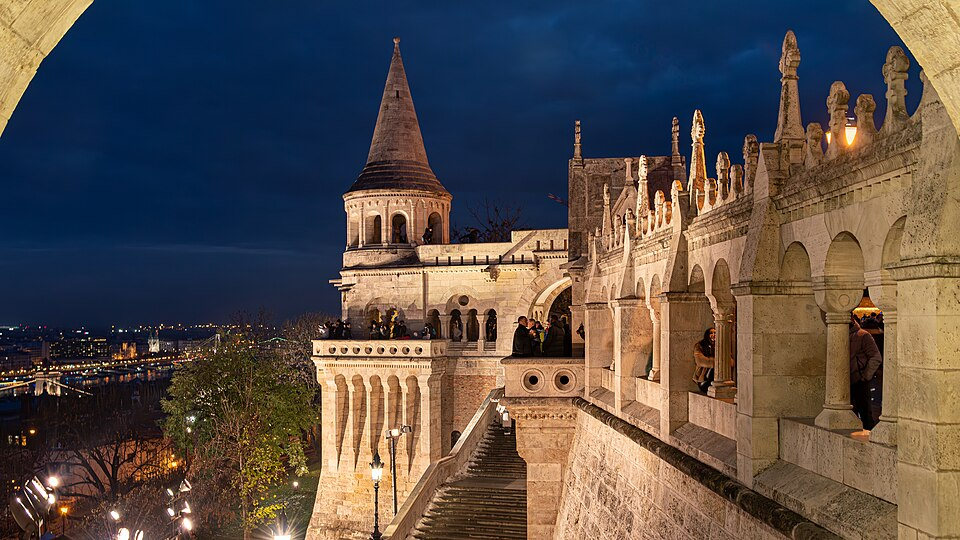 摄于 2024-11-24 |
Jorge Franganillo | CC BY 2.0 | 文件页 |
| 渔人堡（第 3 张） | 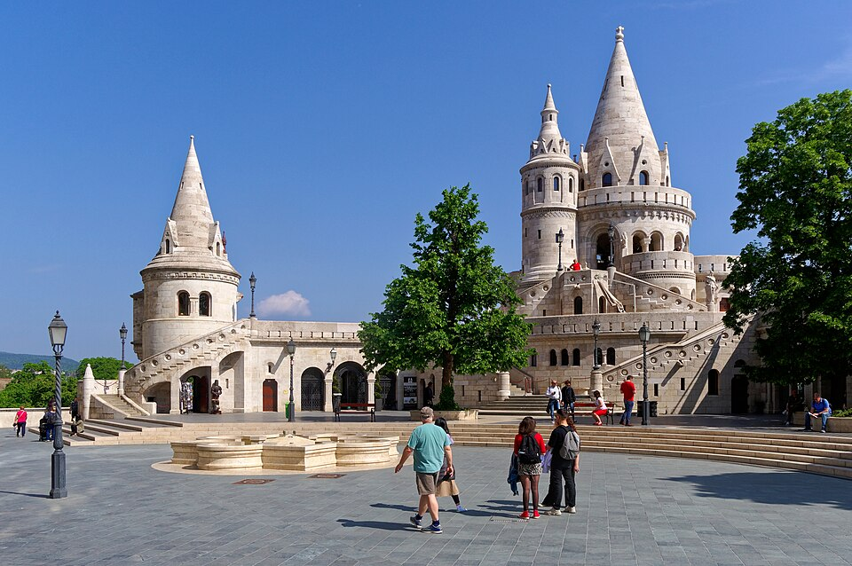 摄于 2019-05-02 |
Jakub Hałun | CC BY-SA 4.0 | 文件页 |
| For Sale Pub（中央市场对面的匈牙利酒馆） | 外链 | 未知 | 未知 | 文件页 |
| Fürberg → St. Gilgen 湖岸路（Uferweg 19） |  摄于 2026-03-08 |
Linie29 | CC BY-SA 4.0 | 文件页 |
| Fuschlsee 环湖 |  摄于 2022-10-16 |
Carsten Steger | CC BY-SA 4.0 | 文件页 |
| Gardekirche（波兰人教堂，Rennweg） |  摄于 2018-05-13 |
Ricardalovesmonuments | CC BY-SA 3.0 | 文件页 |
| Gasthof Gosausee（前湖边餐厅） |  摄于 2019-07-22 |
Funke | CC BY-SA 4.0 | 文件页 |
| Gasthof zur Post（St. Gilgen，1330 年） |  摄于 2025-08-11 |
Андрей Романенко | CC BY-SA 4.0 | 文件页 |
| Gellért 山 Citadella（自由堡垒） |  摄于 2018-01-18 |
Elekes Andor | CC BY-SA 4.0 | 文件页 |
| Gerbeaud 咖啡馆 |  摄于 2023-05-09 |
Elekes Andor | CC BY-SA 4.0 | 文件页 |
| Gmunden 陶瓷跳蚤市场（10-31，现行计划不经过） |  摄于 2025-08-15 |
C.Stadler/Bwag | CC BY-SA 4.0 | 文件页 |
| Gosau 村中心（Gemeindeamt、教堂、Kirchenwirt） |  摄于 2022-04-22 |
Bernd Thaller from Graz, Austria | CC BY 2.0 | 文件页 |
| Hotel-Restaurant Gosauerhof（缆车站一带） | 外链 | 未知 | 未知 | 文件页 |
| Gosaukammbahn 缆车（Zwieselalm，戈绍） | 外链 | 未知 | 未知 | 文件页 |
| Gosausee 湖（前湖到后湖） |  摄于 2022-07-18 |
Nicolas May | CC BY-SA 4.0 | 文件页 |
| Gosausee 湖（前湖到后湖）（第 2 张） | 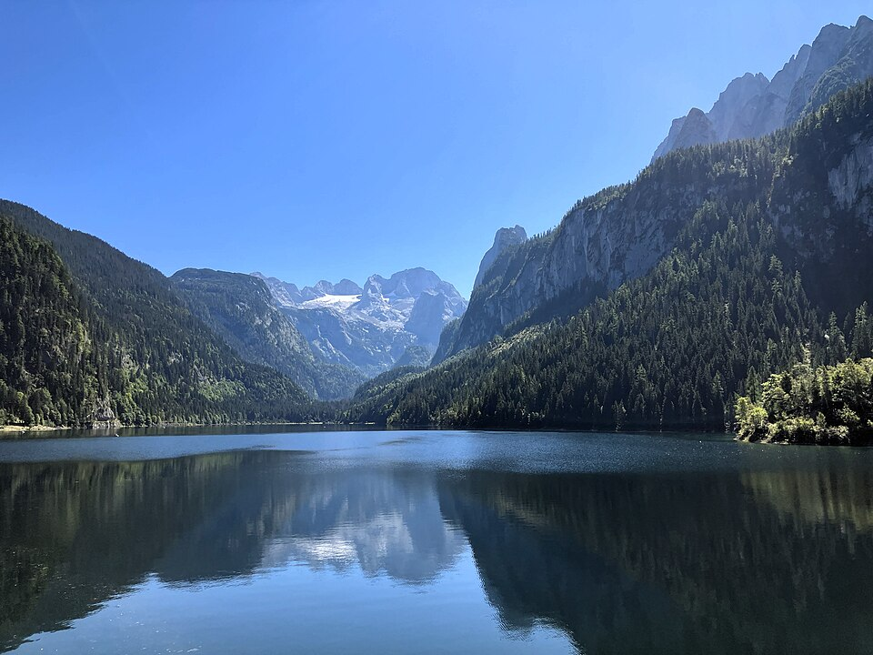 摄于 2023-09-08 |
Michael Burgholzer | CC BY-SA 4.0 | 文件页 |
| Gosausee 湖（前湖到后湖）（第 3 张） | 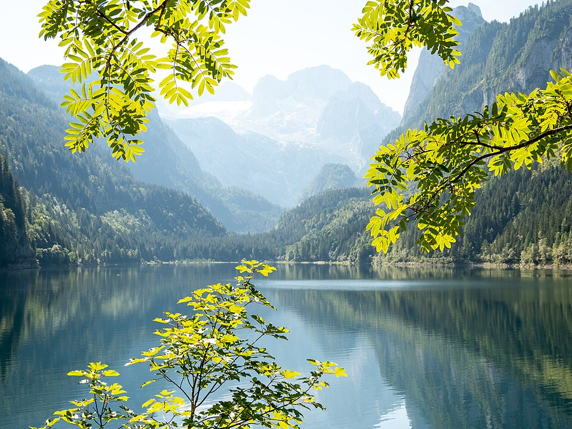 摄于 2019-08-10 |
Dimitry Anikin | CC0 | 文件页 |
| Gosausee 前湖环湖（看 Dachstein 倒影） |  摄于 2019-08-10 |
Dimitry Anikin | CC0 | 文件页 |
| 老城步行街与霍夫堡外观（Graben、Kohlmarkt、Michaelerplatz） |  摄于 2018-07-31 |
Fred Romero from Paris, France | CC BY 2.0 | 文件页 |
| Hallstätter See 东岸湖边路（Steeg → Obertraun） |  摄于 2021-07-29 |
Mateus2019 | CC BY-SA 3.0 | 文件页 |
| Hallstatt 屋顶高处步道与 Müllerstiege |  摄于 2021-07-29 |
Mateus2019 | CC BY-SA 3.0 | 文件页 |
| Hallstatt 空中步道（Skywalk） |  摄于 2019-10-19 |
Bhavishya Goel | CC BY 2.0 | 文件页 |
| Hallstatt 小镇 |  摄于 2019-06-30 |
C.Stadler/Bwag | CC BY-SA 4.0 | 文件页 |
| Hallstatt 小镇（第 2 张） | 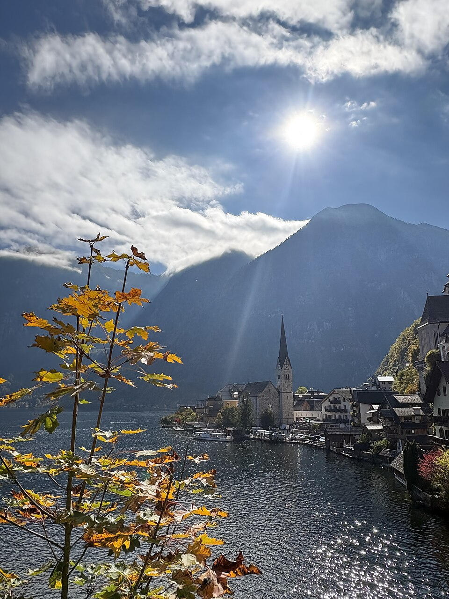 摄于 2025-10-12 |
Tiroooooler | CC BY-SA 4.0 | 文件页 |
| Hallstatt 小镇（第 3 张） | 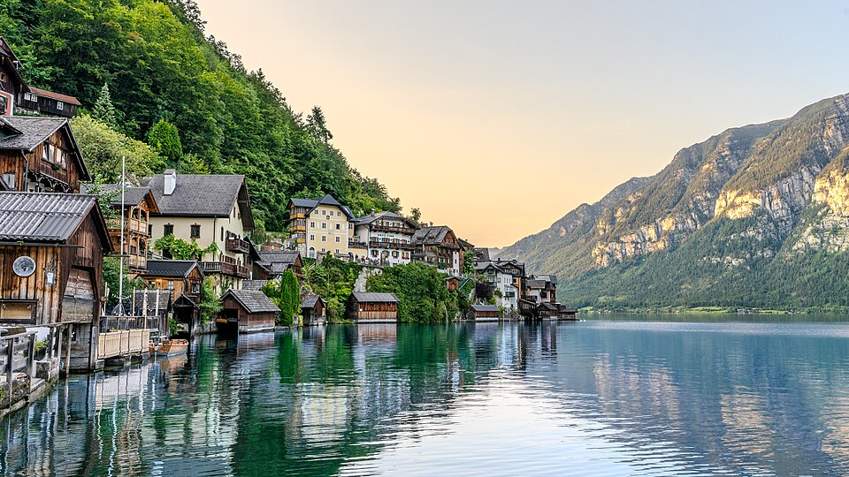 摄于 2025-08-06 |
David Kernan | CC BY 4.0 | 文件页 |
| 音乐之家 | 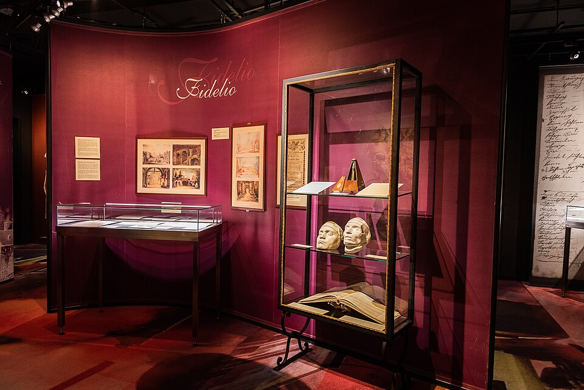 摄于 2020-06-04 |
Agathe Freischütz | CC BY-SA 4.0 | 文件页 |
| Mayer am Pfarrplatz 葡萄酒农庄酒馆 |  摄于 2025-08-16 |
Geolina163 | CC BY-SA 4.0 | 文件页 |
| 霍夫堡与茜茜博物馆 | 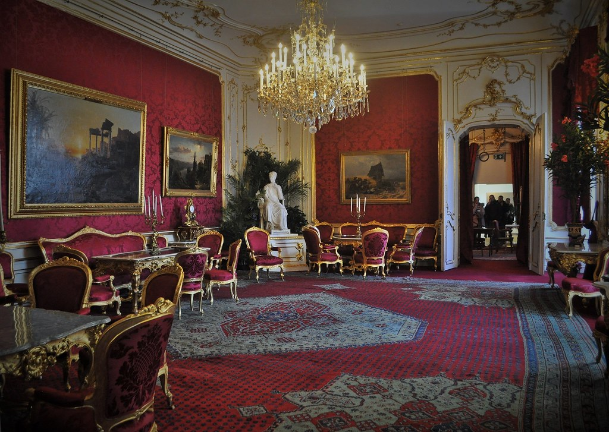 摄于 2020-02-14 |
young shanahan | CC BY 2.0 | 文件页 |
| Horgásztanya 老餐厅（鱼汤、炖牛肉） | 外链 | 未知 | 未知 | 文件页 |
| 岩洞医院核掩体博物馆 |  摄于 2018-05-12 |
Hospital in the Rock Marketing | CC BY-SA 4.0 | 文件页 |
| 恐怖之屋 |  摄于 2018-06-15 |
Bex.Walton | CC BY 2.0 | 文件页 |
| 匈牙利国家美术馆（布达城堡） |  摄于 2024-10-13 |
KovacsDaniel | CC BY 4.0 | 文件页 |
| 匈牙利国家博物馆 |  摄于 2024-08-05 |
Dr Korom | CC BY-SA 2.0 | 文件页 |
| 匈牙利国家歌剧院（导览） |  摄于 2025-08-13 |
Christo | CC0 | 文件页 |
| Jagdhaus Seewiese（Altaussee 东头） |  摄于 2019-07-21 |
Funke | CC BY-SA 4.0 | 文件页 |
| K³ 攀岩馆（抱石） | 外链 | 未知 | 未知 | 文件页 |
| Kaffeewerkstatt（St. Wolfgang 咖啡馆） | 外链 | 未知 | 未知 | 文件页 |
| 维也纳森林徒步（Nußdorf → Kahlenberg → Leopoldsberg） |  摄于 2020-09-27 |
Linie29 | CC BY-SA 4.0 | 文件页 |
| 皇帝别墅 |  摄于 2026-02-27 |
VitVit | CC BY-SA 4.0 | 文件页 |
| 卡尔教堂（含穹顶平台） |  摄于 2020-06-26 |
C.Stadler/Bwag | CC BY-SA 4.0 | 文件页 |
| 卡尔教堂（含穹顶平台）（第 2 张） | 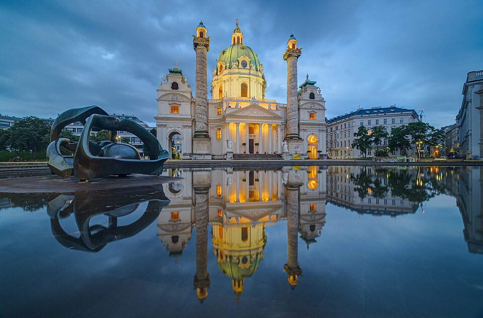 摄于 2019-07-07 |
Moahim | CC BY-SA 4.0 | 文件页 |
| 卡尔教堂（含穹顶平台）（第 3 张） | 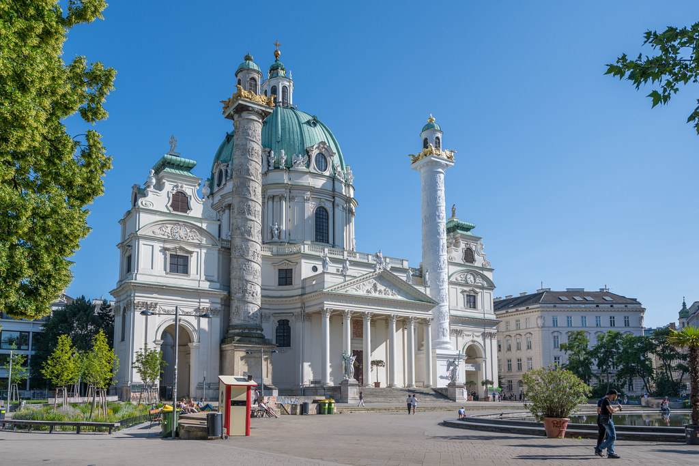 摄于 2025-06-14 |
Sandor_Somkuti | CC BY-SA 4.0 | 文件页 |
| Katrin 山（缆车 + 山顶环线） |  摄于 2026-07-21 |
Linie29 | CC BY 4.0 | 文件页 |
| 徒步上 Katrin（从谷站走上山） |  摄于 2019-07-06 |
H. Raab (User:Vesta) | CC BY-SA 4.0 | 文件页 |
| Kirchenwirt Gosau（戈绍村中心） | 外链 | 未知 | 未知 | 文件页 |
| Krippenstein 缆车与 5fingers 观景台 |  摄于 2026-07-20 |
Mojmir Churavy | CC0 | 文件页 |
| Krippenstein 高山步道（Heilbronner 环线 → Gjaid） |  摄于 2026-07-21 |
Mojmir Churavy | CC0 | 文件页 |
| 艺术史博物馆（含穹顶咖啡厅） |  摄于 2024-07-10 |
Sandor Somkuti | CC BY-SA 2.0 | 文件页 |
| Lánchíd Söröző（链子桥布达端，牛肉汤、鸭腿） | 外链 | 未知 | 未知 | 文件页 |
| Langbathseen 双湖环线（Ebensee） |  摄于 2019-10-20 |
laijos | CC BY 4.0 | 文件页 |
| 利奥波德博物馆 | 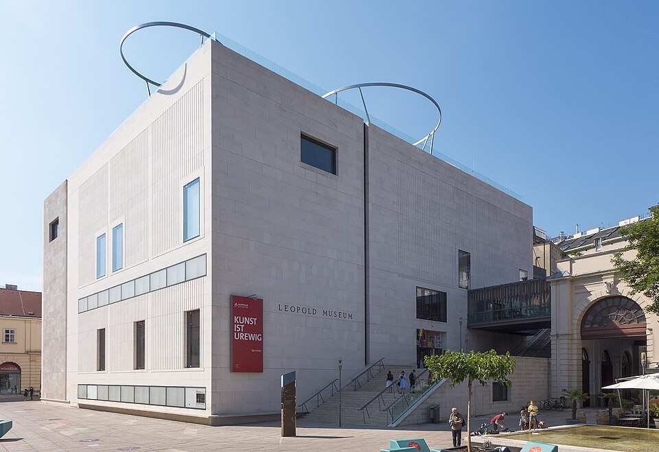 摄于 2021-06-12 |
Gugerell | CC0 | 文件页 |
| Liberty 桥（自由桥） |  摄于 2021-10-09 |
Balon Greyjoy | CC0 | 文件页 |
| MAG47 攀岩馆（抱石） | 外链 | 未知 | 未知 | 文件页 |
| 马加什教堂 |  摄于 2026-09-26 |
Yair-haklai | CC BY-SA 4.0 | 文件页 |
| 马加什教堂（第 2 张） | 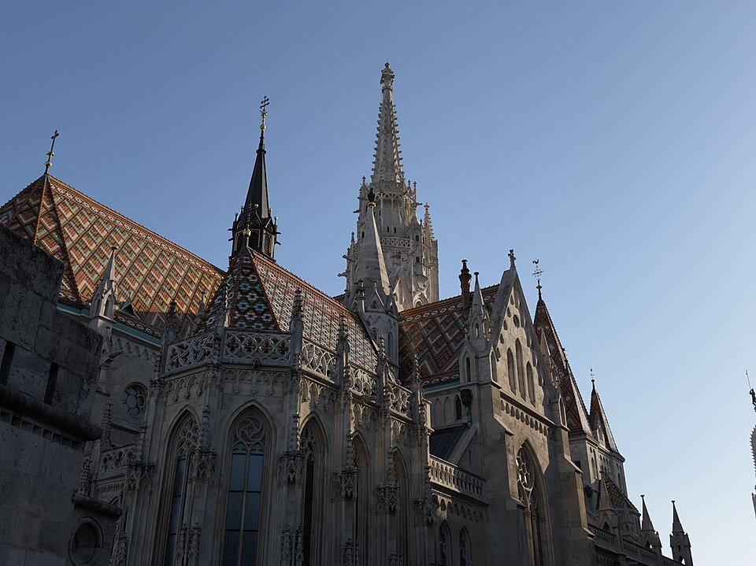 摄于 2026-08-11 |
Mike is Michi | CC BY-SA 4.0 | 文件页 |
| 马加什教堂（第 3 张） | 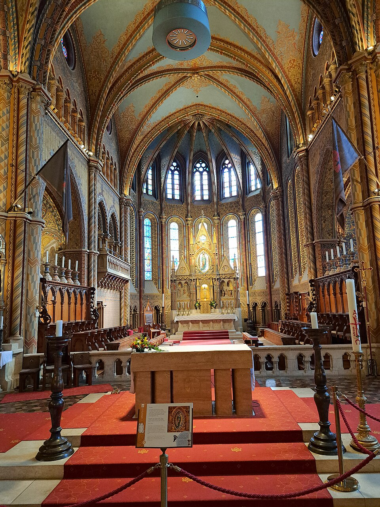 摄于 2023-04-21 |
Bybbisch94, Christian Gebhardt | CC BY-SA 4.0 | 文件页 |
| 米歇尔教堂（Michaelerkirche） |  摄于 2025-04-27 |
Sandor Somkuti from Wien, Österreich | CC BY-SA 2.0 | 文件页 |
| Mozarthaus St. Gilgen（Mozart 母亲出生地） |  摄于 2022-10-31 |
Thomas Ledl | CC BY-SA 4.0 | 文件页 |
| Muk's Schmankerl（Hallstatt 小店） | 外链 | 未知 | 未知 | 文件页 |
| 布达佩斯美术馆 |  摄于 2018-12-05 |
MartinThoma | CC0 | 文件页 |
| 纳什市场与周六跳蚤市场 |  摄于 2025-03-19 |
Geolina163 | CC BY-SA 4.0 | 文件页 |
| 纽约咖啡馆 |  摄于 2025-01-04 |
Asif Masimov | CC BY 3.0 | 文件页 |
| Nussensee 环线（经 Wildenstein 古堡遗址） |  摄于 2026-08-13 |
Tigerente | CC BY 4.0 | 文件页 |
| Öfferl 面包店（Landstraßer Hauptstraße 店） | 外链 | 未知 | 未知 | 文件页 |
| 国会大厦导览 |  摄于 2018-08-24 |
Suicasmo | CC BY-SA 4.0 | 文件页 |
| Buda 河岸看国会夜景（Bem rakpart / Szilágyi Dezső tér 一带） |  摄于 2025-01-27 |
Furkan Akkurt | CC BY-SA 4.0 | 文件页 |
| 圣伯多禄教堂（彼得教堂） |  摄于 2025-04-27 |
Sandor_Somkuti | CC BY-SA 2.0 | 文件页 |
| 湖边朝圣路（St. Gilgen → Falkenstein → St. Wolfgang） |  摄于 2026-06-08 |
Tsungam | CC BY-SA 4.0 | 文件页 |
| 国家图书馆大厅 |  摄于 2021-02-20 |
BMSTe | CC BY-SA 4.0 | 文件页 |
| Reinthaler's Beisl（老城传统小馆） | 外链 | 未知 | 未知 | 文件页 |
| Retro Lángos（兰戈斯炸饼） | 外链 | 未知 | 未知 | 文件页 |
| Ribs of Vienna（烤猪肋排） | 外链 | 未知 | 未知 | 文件页 |
| Salesianerinnenkirche（萨雷尔女修会教堂，Rennweg） |  摄于 2021-10-22 |
Wolfgang Sauber | CC BY-SA 4.0 | 文件页 |
| Hallstatt 盐矿 |  摄于 2022-07-09 |
Oleksandr Dede | CC BY-SA 4.0 | 文件页 |
| Altaussee 盐矿（备选） |  摄于 2022-09-24 |
Tigerente | CC BY-SA 4.0 | 文件页 |
| 徒步上 Schafberg（从 St. Wolfgang 上山，坐齿轨下山） |  摄于 2024-07-26 |
Carsten Steger | CC BY-SA 4.0 | 文件页 |
| Schafberg 齿轨火车（坐上山） |  摄于 2026-06-08 |
Tsungam | CC BY-SA 4.0 | 文件页 |
| 美泉宫 |  摄于 2022-07-03 |
C.Stadler/Bwag | CC BY-SA 4.0 | 文件页 |
| 分离派会馆（克里姆特 Beethoven 横饰带） |  摄于 2024-02-04 |
Conny Duck | CC BY-SA 4.0 | 文件页 |
| See Cafe Brandl（St. Gilgen） | 外链 | 未知 | 未知 | 文件页 |
| Seewirt Zauner（Hallstatt Marktplatz） |  摄于 2019-05-17 |
Liberaler Humanist | CC BY-SA 3.0 | 文件页 |
| 多瑙河鞋子纪念碑 |  摄于 2022-03-04 |
Marek Mróz | CC BY-SA 4.0 | 文件页 |
| Siriuskogl 小山环线 |  摄于 2020-08-20 |
C.Stadler/Bwag | CC BY-SA 4.0 | 文件页 |
| 运盐古道 Soleweg（Bad Ischl → Bad Goisern） |  摄于 2012-10-26 |
RiederKreis | CC BY-SA 3.0 | 文件页 |
| SPOT Boulder 抱石馆 | 外链 | 未知 | 未知 | 文件页 |
| St. Gilgen 小镇与湖边 |  摄于 2018-09-12 |
Arne Müseler | CC BY-SA 3.0 de | 文件页 |
| 圣伊什特万大教堂（露台） |  摄于 2018 |
P. Hughes | CC BY 4.0 | 文件页 |
| St. Wolfgang 朝圣教堂与 Pacher 祭坛 |  摄于 2024-10-17 |
2015 Michael 2015 | CC BY-SA 4.0 | 文件页 |
| St. Wolfgang 小镇（圣沃尔夫冈） |  摄于 2021-10-03 |
C.Stadler/Bwag | CC BY-SA 4.0 | 文件页 |
| St. Wolfgang 小镇（圣沃尔夫冈）（第 2 张） | 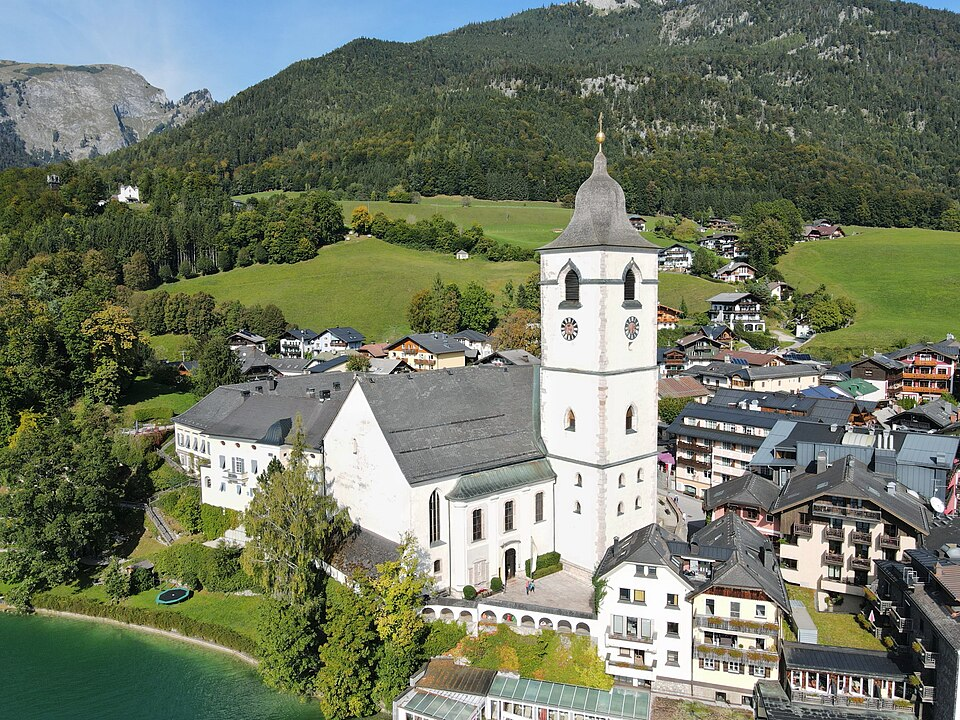 摄于 2021-10-03 |
C.Stadler/Bwag | CC BY-SA 4.0 | 文件页 |
| St. Wolfgang 小镇（圣沃尔夫冈）（第 3 张） | 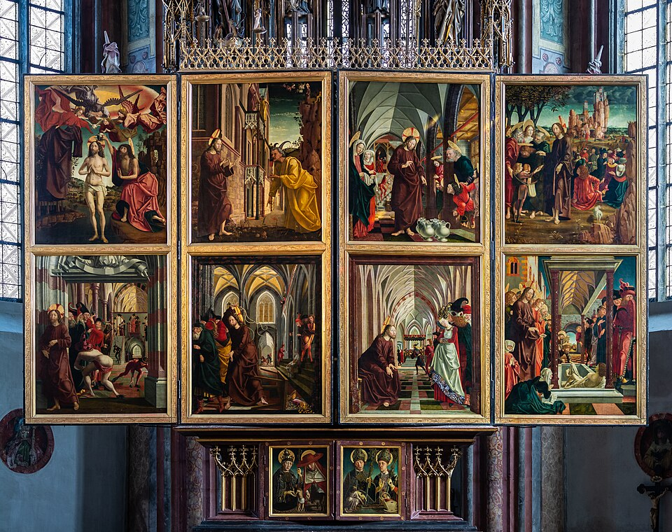 摄于 2019-03-12 |
Uoaei1 | CC BY-SA 4.0 | 文件页 |
| Stand25 Bisztró（城堡山下，匈牙利经典菜） | 外链 | 未知 | 未知 | 文件页 |
| 圣斯蒂芬大教堂 |  摄于 2026-07-21 |
Thomas Dahlstrøm Nielsen | CC BY 4.0 | 文件页 |
| 圣斯蒂芬大教堂（第 2 张） | 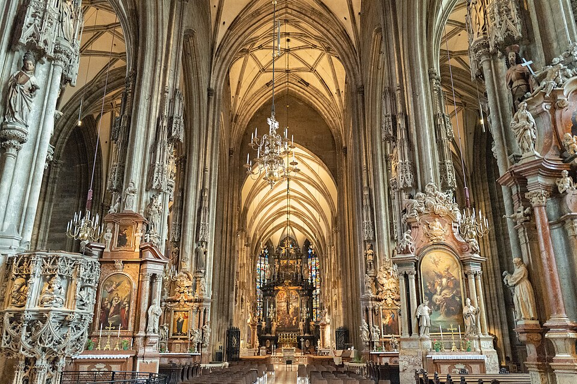 摄于 2023-07-28 |
Giorgio Galeotti | CC BY-SA 4.0 | 文件页 |
| 圣斯蒂芬大教堂（第 3 张） | 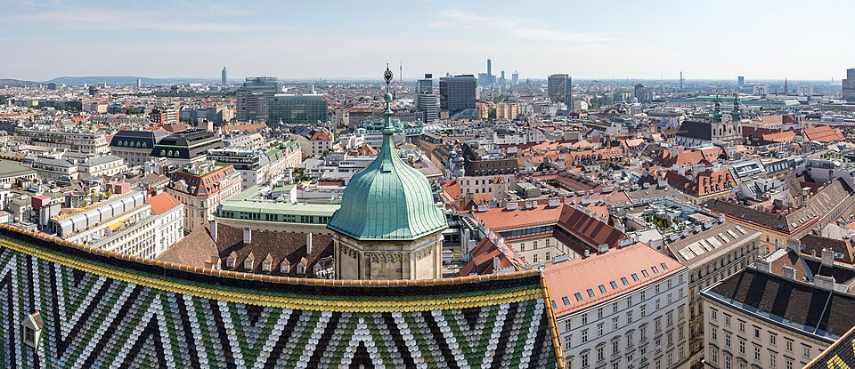 摄于 2018-06-17 |
Dietmar Rabich | CC BY-SA 4.0 | 文件页 |
| 自由广场 |  摄于 2018 |
P. Hughes | CC BY 4.0 | 文件页 |
| 塞切尼温泉 |  摄于 2022-04-13 |
Robot8A | CC BY-SA 4.0 | 文件页 |
| Szimpla Kert 废墟酒吧 |  摄于 2022-10-01 |
Random photos 1989 | CC0 | 文件页 |
| Taste Asian（中国老板，鹅肝、牛舌） | 外链 | 未知 | 未知 | 文件页 |
| Traun 河边散步（Bad Ischl 镇中心） |  摄于 2018-09-24 |
David McGregor | CC BY-SA 2.0 | 文件页 |
| Trześniewski（开口小三明治） | 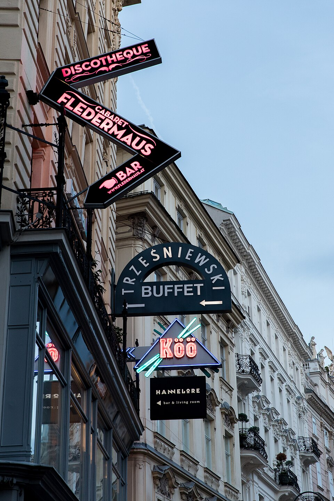 摄于 2024-08-01 |
Johannes Maximilian | CC BY-SA 4.0 | 文件页 |
| Váci 街与 Ferenciek tere、Klotild 宫（步行街） |  摄于 2026-04-01 |
Elekes Andor | CC BY 4.0 | 文件页 |
| 沃蒂夫教堂（两塔之间亮灯的“∞”光雕塑，就是用户说的“有莫比乌斯环的教堂”） |  摄于 2025-12-18 |
Linie29 | CC BY-SA 4.0 | 文件页 |
| 沃蒂夫教堂博物馆（安特卫普祭坛） | 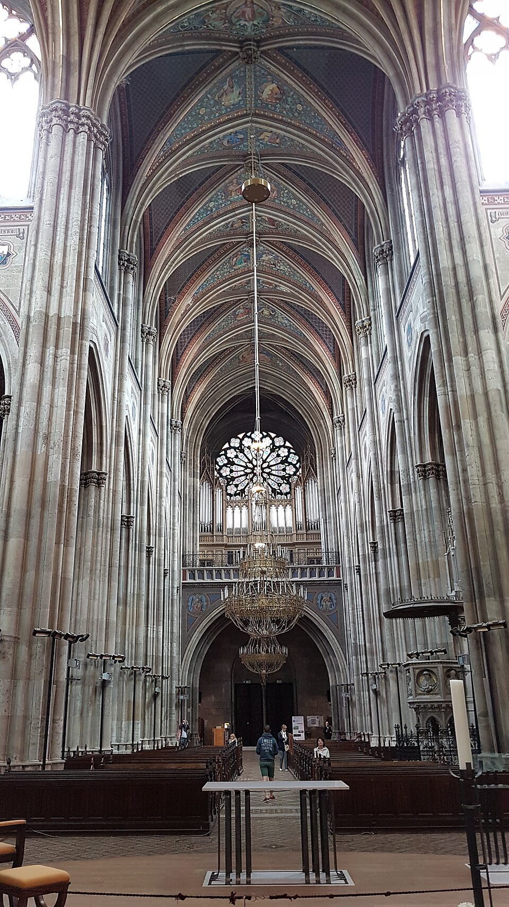 摄于 2018-05-17 |
Ricardalovesmonuments | CC BY-SA 3.0 | 文件页 |
| Wolfgangsee 游船（St. Wolfgang → St. Gilgen） |  摄于 2019-10-01 |
Eweht | CC BY-SA 4.0 | 文件页 |
| Zauner 甜品店 |  摄于 2018-09-02 |
Wikiadopter01 | CC BY-SA 4.0 | 文件页 |
| Zwölferhorn 缆车与山顶环线 |  摄于 2021-07-29 |
Mateus2019 | CC BY-SA 3.0 | 文件页 |
| Zwölferhorn 缆车与山顶环线（第 2 张） | 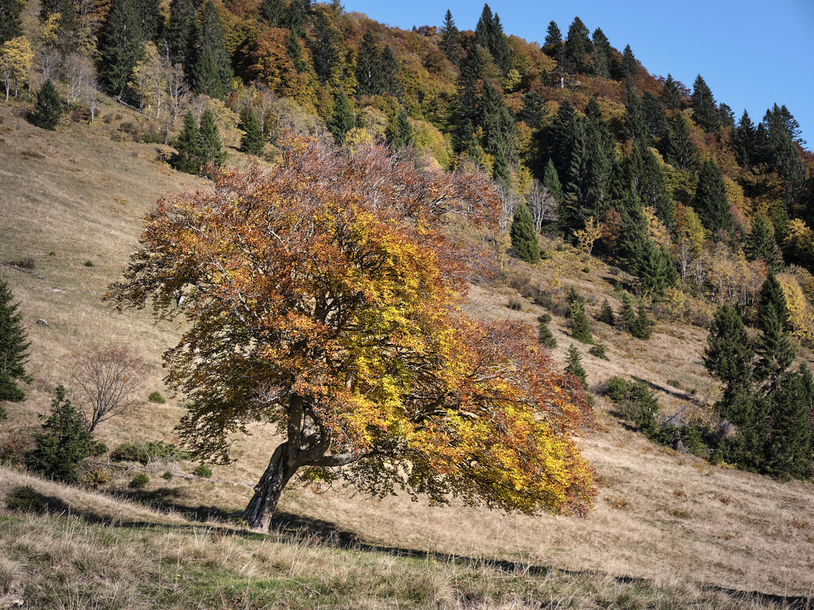 摄于 2021-10-20 |
laijos | CC BY 4.0 | 文件页 |
| Zwölferhorn 缆车与山顶环线（第 3 张） | 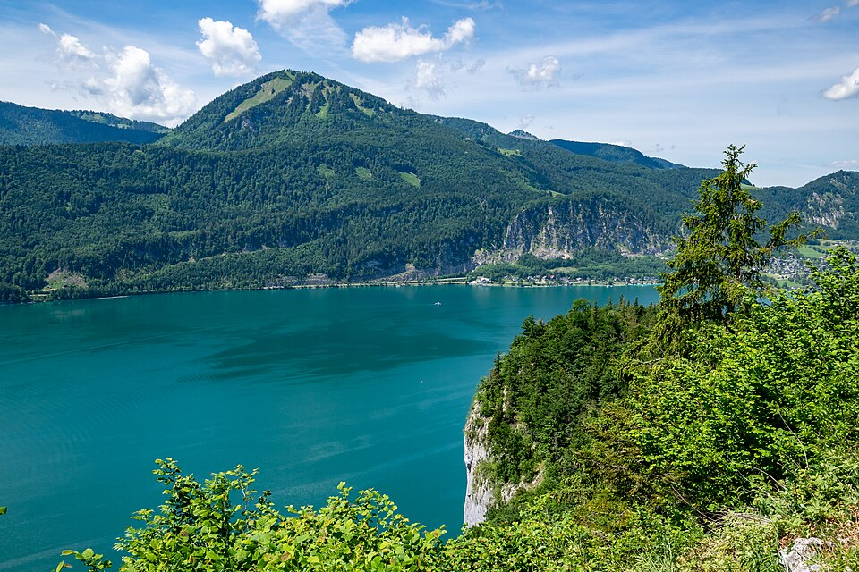 摄于 2026-06-08 |
Tsungam | CC BY-SA 4.0 | 文件页 |
| Zwölferhorn 山顶 Pillenstein 全景环线 |  摄于 2018-05-02 |
Naval S | CC BY 2.0 | 文件页 |
.JPG){kind=link}
.jpg){kind=link}
.jpg){kind=link}


.JPG){kind=link}


.jpg){kind=link}
.jpg){kind=link}
.jpg){kind=link}


_-_Flickr_-_Sandor_Somkuti.jpg){kind=link}
.jpg){kind=link}


.jpg){kind=link}


.jpg){kind=link}


.jpg){kind=link}
.jpg){kind=link}


.jpg){kind=link}
.jpg){kind=link}
.jpg){kind=link}


.JPG){kind=link}


_-_Flickr_-_Sandor_Somkuti.jpg){kind=link}


.jpg){kind=link}

.-014.jpg){kind=link}
.jpg){kind=link}


.jpg){kind=link}


.jpg){kind=link}
.jpg){kind=link}


.jpg){kind=link}

.JPG){kind=link}


,_Hauptaltar,_2024-10-17.jpg){kind=link}


.jpg){kind=link}


.jpg){kind=link}
.jpg){kind=link}